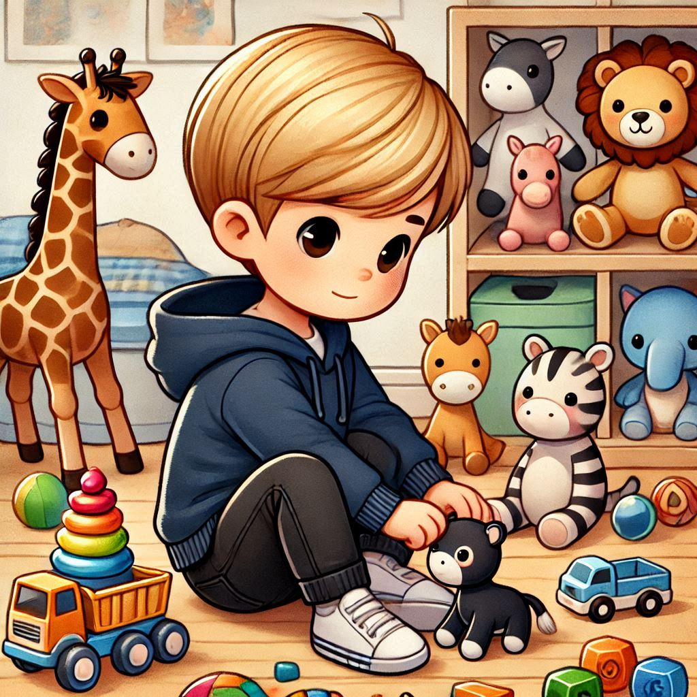
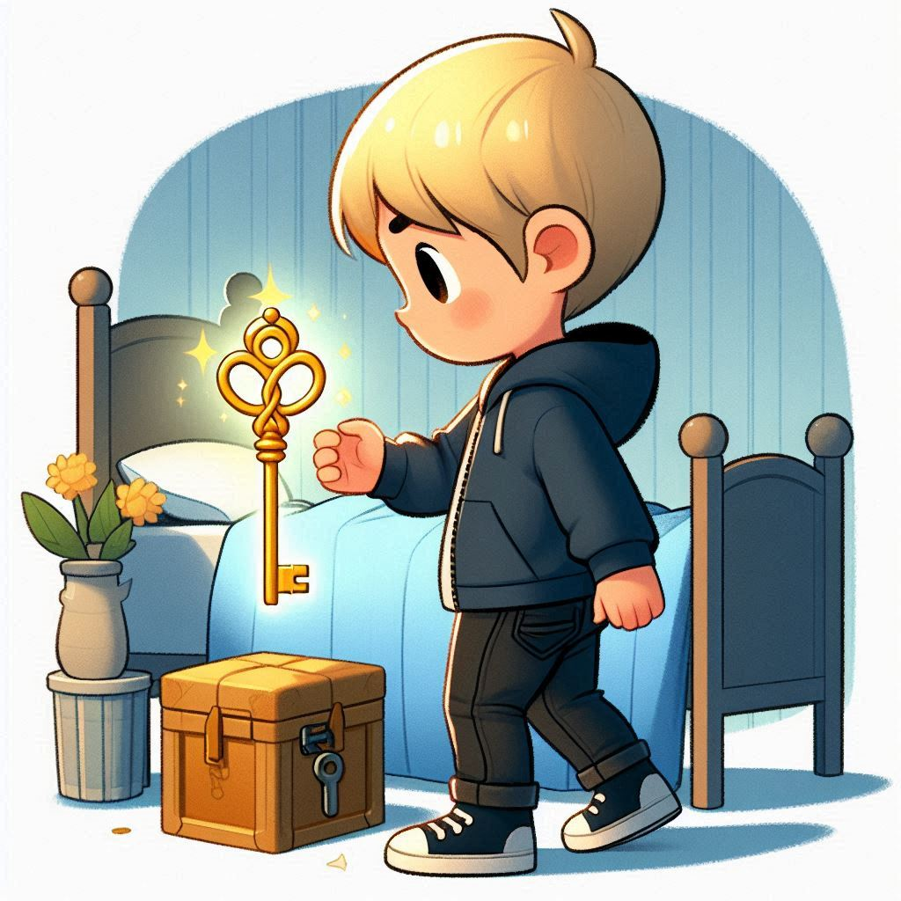
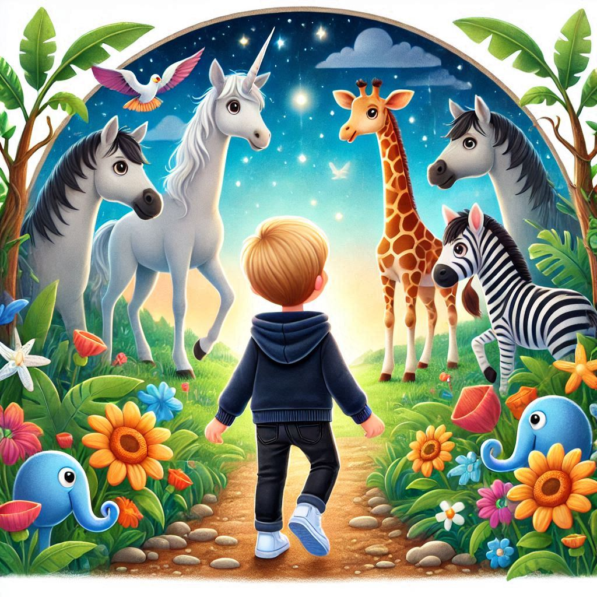
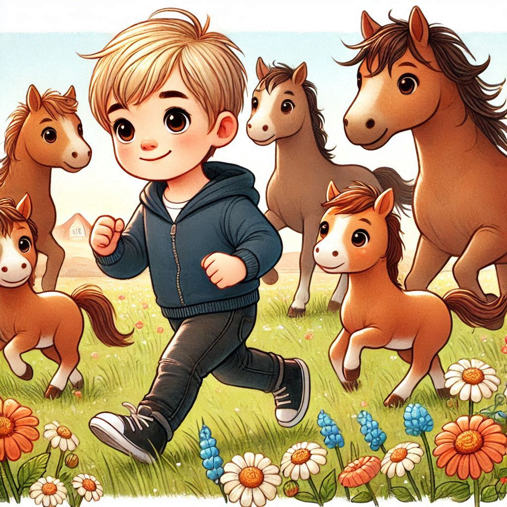
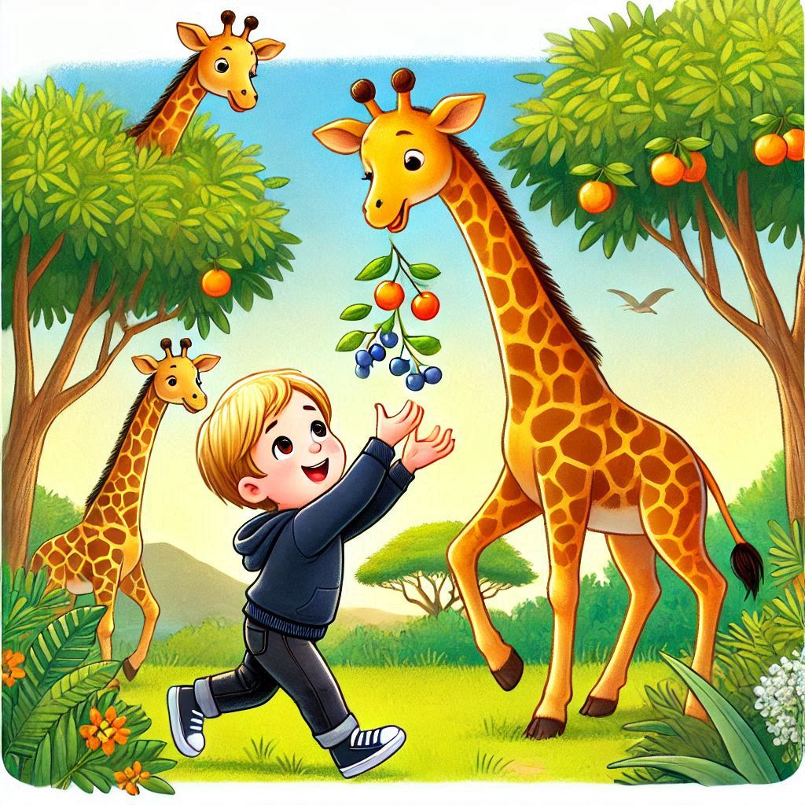
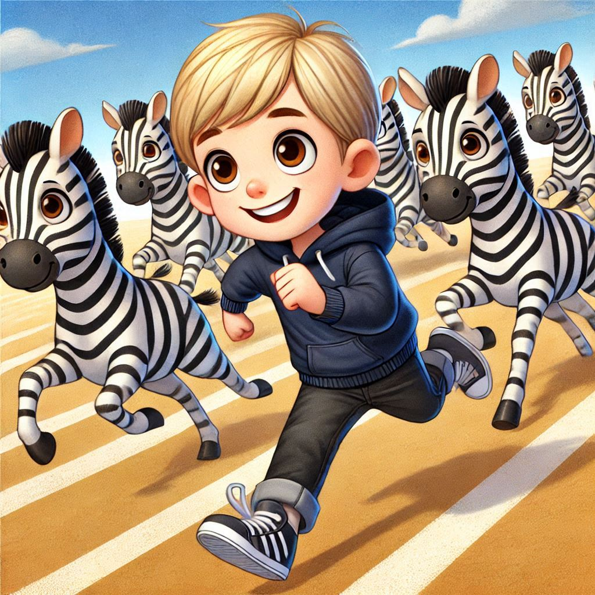
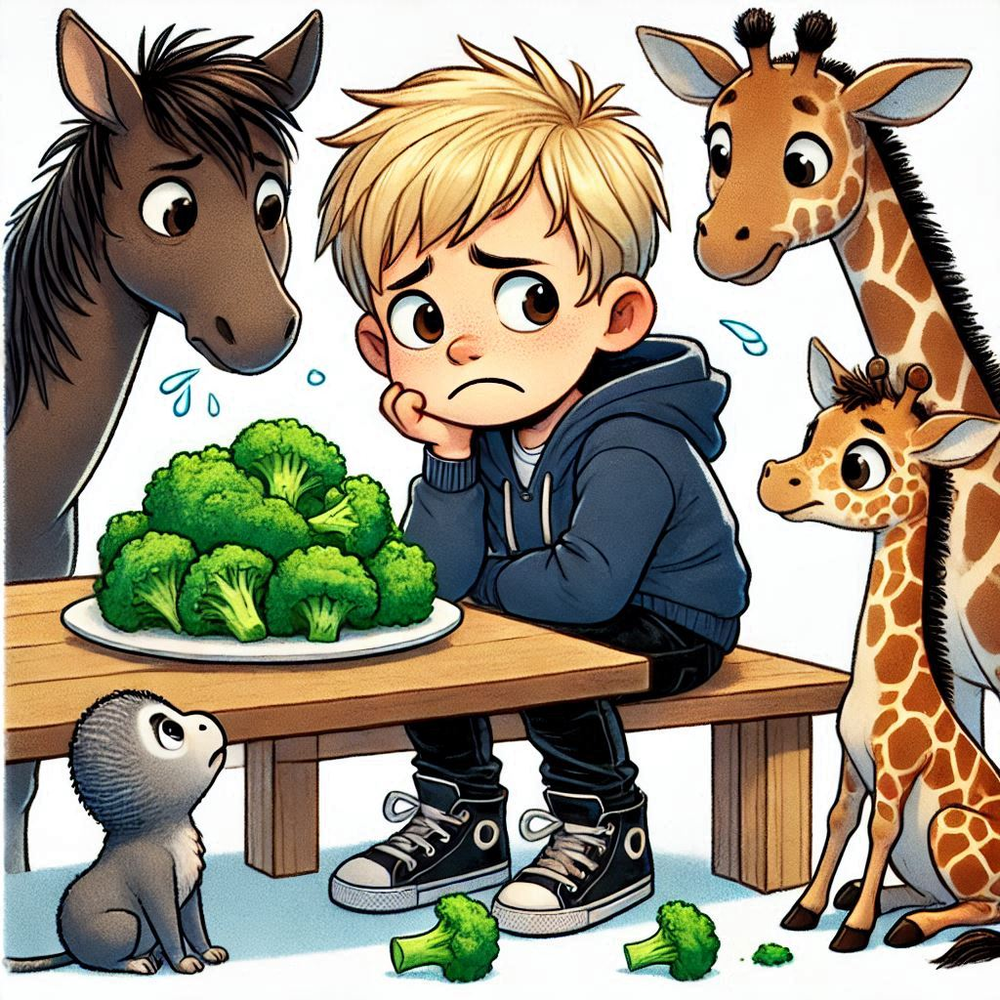
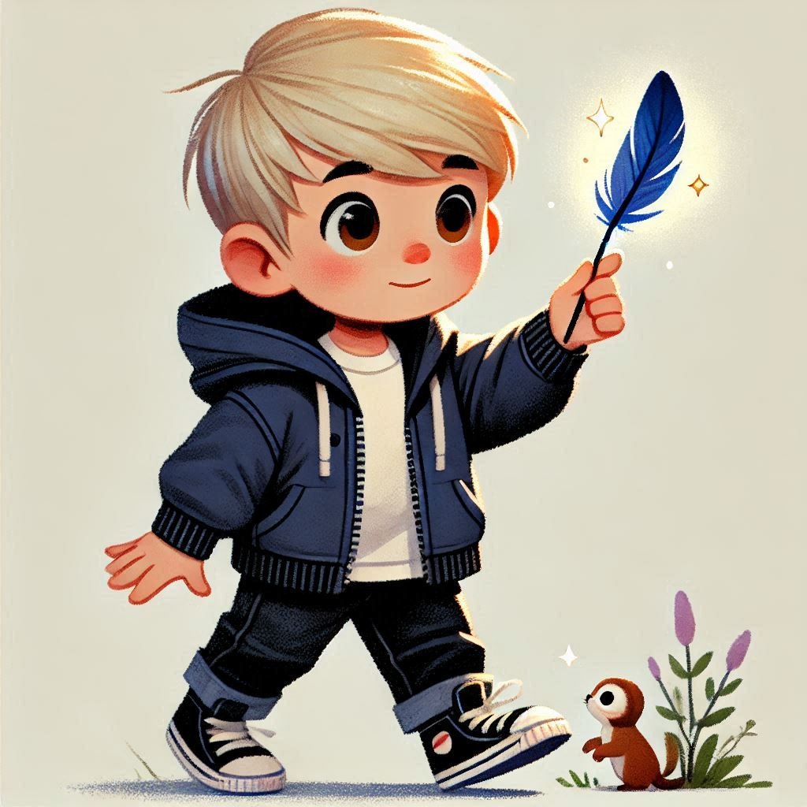

Al tranquil poble de Mongat, vivia un nen de tres anys anomenat Adrià. Li encantaven tota mena d'animals. Passava els dies envoltat de les seves joguines preferides, somiant amb aventures màgiques.

Un dia, mentre jugava a la seva habitació, Adrià va trobar una clau daurada i brillant dins d'un dels seus contes. Intrigat, va decidir seguir el camí que la clau li indicava.

La clau va portar a l'Adrià darrere l'armari, on es va fer un forat a la paret i va aparèixer un món màgic on els cavalls, les girafes i les zebres vivien junts en harmonia. L'Adrià no es podia creure el que veien els seus ulls: estava envoltat dels seus animals preferits!

L'Adrià va córrer alegrement amb els cavalls en una praderia plena de flors. Els cavalls eren molt amables i el van convidar a jugar a curses. L'Adrià es va divertir molt i va aprendre la importància de ser amable i compartir.

Després, l'Adrià va ajudar les girafes a agafar fruites de dalt dels arbres. Les girafes eren molt altes i divertides, i l'Adrià reia cada cop que una girafa estirava el seu llarg coll per arribar a una fruita. Va aprendre que tots tenim habilitats úniques.

Després, l'Adrià va participar en una emocionant cursa amb les zebres en una montanyeta. Les zebres i l'Adrià corrien molt de pressa, gaudint del vent a les seves cares. l'Adrià va entendre que la diversió és millor quan es comparteix amb amics.

A l'hora de dinar, l'Adrià es va trobar amb un plat de bròquil. Els seus amics animals el van animar a provar-lo. Tot i que no li agradava, l'Adrià va decidir donar-li una oportunitat... i es va endur una bona sorpresa! No estava tan malament després de tot. Va aprendre que és important provar coses noves.

Arribada la nit, l'Adrià es va acomiadar dels seus nous amics i, amb un record màgic a la mà, va tornar a casa. Es va ficar al llit feliç, somiant amb futures aventures que segur vindran.